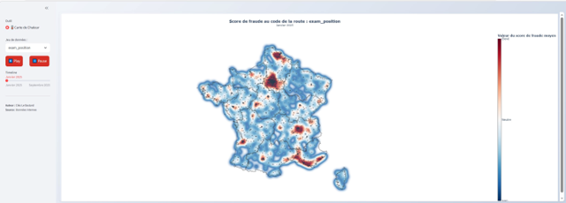
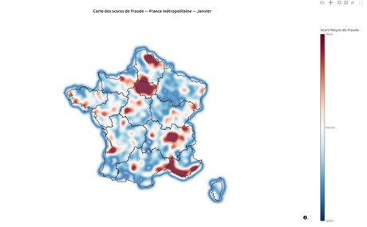

Sentinel.
Pipeline Python automatisé transformant des scores de fraude bruts en cartes de chaleur géographiques interactives — filtrables par mois et par algorithme de détection
Les scores de fraude au code de la route calculés par l'équipe Data Science sont inexploitables sous leur forme brute. Un prototype existait — des cartes statiques illisibles en zones denses, sans filtrage temporel. La mission : repartir de zéro pour livrer un pipeline automatisé et une interface accessible à un analyste sans compétences techniques.
Traitement réalisé
Extraction des coordonnées GPS depuis le format propriétaire Neo4j via regex, enrichissement par jointure spatiale (GeoPandas + GeoJSON) et mise en cache — les coordonnées d'un site étant fixes, le traitement n'est effectué qu'une seule fois par fichier.
Le territoire est découpé en cellules de 15 km × 15 km. La moyenne des scores par cellule est calculée et affichée selon un gradient bleu → blanc → rouge (Plotly). Chaque combinaison jeu de données / mois produit un fichier HTML distinct, chargé à la demande sans recalcul.
Authentification YAML, sélecteur entre les 3 algorithmes de détection, slider temporel chronologique et animation Play/Pause. Une convergence des 3 cartes sur une même zone renforce la suspicion de fraude.
Résultats
- Pipeline 0-clic : CSV déposé → carte disponible automatiquement, sans intervention manuelle
- 50 000 lignes en moins de 3 secondes grâce au cache géographique (contre plusieurs heures sans)
- Clusters géographiques révélés par l'agrégation spatiale — invisibles sur les cartes à points initiales
- Interface accessible sans formation, prise en main immédiate pour l'équipe
- En phase de déploiement : machine virtuelle de dev → serveur dédié La Poste


Lien avec le programme national
Pipeline géospatial automatisé : extraction GPS depuis format propriétaire, jointure spatiale (GeoPandas), mise en cache — 50 000 lignes en moins de 3 secondes contre plusieurs heures sans optimisation.
MobiliséeAgrégation spatiale par cellules de 15 km × 15 km révélant des clusters géographiques invisibles sur les cartes à points initiales. Convergence des 3 algorithmes sur une même zone comme signal d'anomalie.
MobiliséeNon mobilisée : Sentinel visualise des scores produits par les modèles de détection de l'équipe Data Science. La mission porte sur le traitement et la valorisation, pas sur la modélisation elle-même.
Non mobiliséeInterface Streamlit 0-clic avec authentification YAML, slider temporel et animation Play/Pause — prise en main immédiate par un analyste sans compétences techniques.
MobiliséeCe que j'en retire
GeoPandas, jointures spatiales, GeoJSON — extraction et enrichissement géographique à l'échelle nationale.
AcquisOrchestration automatisée, mise en cache, structuration pour la maintenabilité par une équipe non-développeur.
AcquisStreamlit — authentification, animation temporelle, composants interactifs accessibles sans formation.
AcquisContraintes SI réelles, autorisations au cas par cas, Docker refusé — trouver des alternatives légères en environnement contraint.
Acquis